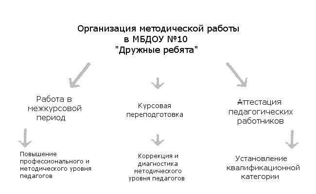

Планирование и организация методической работы в МБДОУ №10 «Дружные ребята» в межаттестационный период
Творческого ребенка может воспитать только творческий педагог. Выявить, развить творческие ростки в личности педагога - основная задача методической службы МБДОУ №10.
Что именно стимулирует активность педагога в методической работе? Каким образом активизировать, контролировать, оценивать и подводить итоги участия в этой работе?
С этой целью методическая работа педагогического работника условно распределена на периоды от аттестации к аттестации.
I. Этапы организации методической работы.
Первый этап - это работа в межкурсовой период, на протяжении которого педагог активно работает над повышением своего профессионального уровня, берет участие во всех видах методической работы, которые созвучны его теме самообразования, активно изучает и внедряет передовой педагогический опыт в данном вопросе.Второй этап - курсовая переподготовка, в результате которой происходит коррекция и диагностика профессионального роста педагога. На этом этапе происходит своеобразная самооценка достижений. Педагог составляет ответы на вопросы: «Какой я есть сегодня?» и «Каким я должен быть сегодня?», «Что еще необходимо усовершенствовать, выучить, учесть, чтобы соответствовать требованиям современности?».
Третий этап - аттестация педагога, в результате которой устанавливается соответствие квалификационным категориям

Для того чтобы аттестация прошла успешно , педагогу необходимо убедительно продемонстрировать членам педагогического коллектива и членам аттестационной комиссии свои педагогические находки и открытия, которые характеризируют явный рост его педагогического мастерства.Поскольку аттестация лежит в основе всей методической работы в ДОУ, каждый педагогический работник должен быть хорошо ознакомлен с требованиями и правилами ее проведения, правильно спланировать и организовать свою работу в межаттестационный период, ориентируясь на параметры, по которым будут оценивать его деятельность(схема 2)
II. Самообразование педагога.
Одним из основных вопросов, на которые обращают внимание во время аттестации, является уровень владения ведущей темой самообразования, над которой работал педагог. Эту тему, как правило, выбирают в результате самоанализа профессиональной деятельности, который осуществляет педагог, а также заполнение индивидуальной диагностической карты, которая определяет круг тех вопросов, что требуют усовершенствования и дополнительной работы.Выбрав углубленную тему работы, над которой будет работать педагог в межаттестационный период, необходимо правильно составить перспективный и годовой план самообразования (схема № 3).
Существуют определенные этапы роботы над реализацией темы самообразования (см. схему 3).
Первый этап -как уже было сказано, связан с перспективным и годовым планированием.
Второй этап - состоит в нахождении и обработке литературы и материалов передового опыта. Это - теоретический этап изучения проблемы.
Третий этап - аналитический. Все прочитанное и обработанное необходимо проанализировать, пропустить сквозь призму своего видения развязывания проблемы, спланировать первые шаги практического применения.
На четвертом этапе этапе происходит активное практическое использование приобретенных знаний. Это - практический этап работы.
Пятый этап связан с оценкой достижений педагога.
III. Результативность методической работы.
В зависимости от того, на каком этапе изучения проблемы находится педагогический работник, необходимо предоставлять методическую помощь. А также обеспечивать контроль и коррекцию его деятельности.При этом следует выбирать наиболее целесообразные для данного педагога формы методической работы ( схема№ 4).